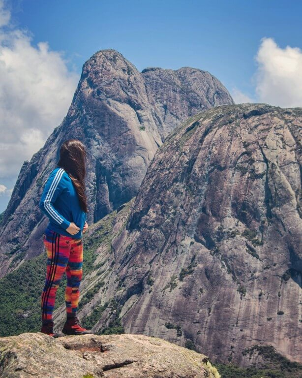
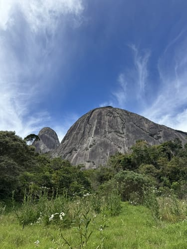

Trilhas
-

Trilha das Sete Quedas:
A Trilha das Sete Quedas, em Teresópolis, é uma rota de caminhada que leva a um conjunto de cachoeiras e poços, dentro da Reserva Particular do Patrimônio Natural (RPPN) Serra Grande. A trilha é considerada de nível fácil a moderado, com duração média de 4 horas, e é recomendada para quem busca contato com a natureza e banhos em águas cristalinas.
-

Trilha da Pedra do Faraó:
A Pedra do Faraó, em Teresópolis, é um destino popular para amantes de trilhas e montanhismo, oferecendo vistas panorâmicas da região e desafios para diferentes níveis de experiência. A trilha, com seus trechos íngremes e mata fechada, exige preparo físico e atenção, especialmente em dias de chuva.